《全球视野下的犹太文明》课程学生创意作品集 - 探索犹太文化与中华文化的交融
来自北京大学、清华大学等高校学生的精彩创意作品，融合犹太文化与中国传统工艺
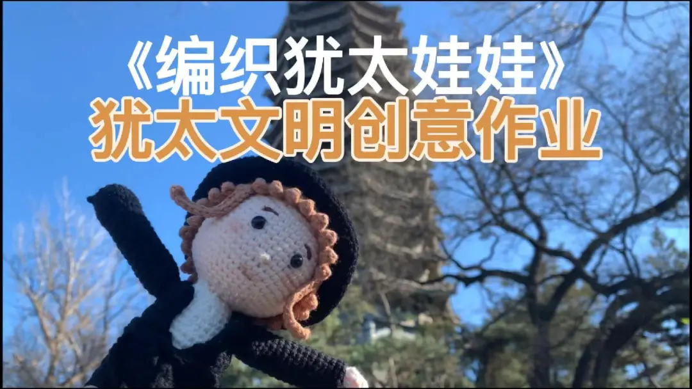
在《全球视野下的犹太文明》课程中，我系统学习了犹太文化，对他们的服饰传统特别感兴趣。为了把学到的知识表现出来，我决定亲手做一个犹太男性毛线娃娃。我仔细还原了传统服饰的细节，比如小圆帽、黑色外套和鬓角发型。我想用这种可爱直观的手工作品，展示我对犹太服饰文化的理解，也探索传统和现代手工结合的可能。
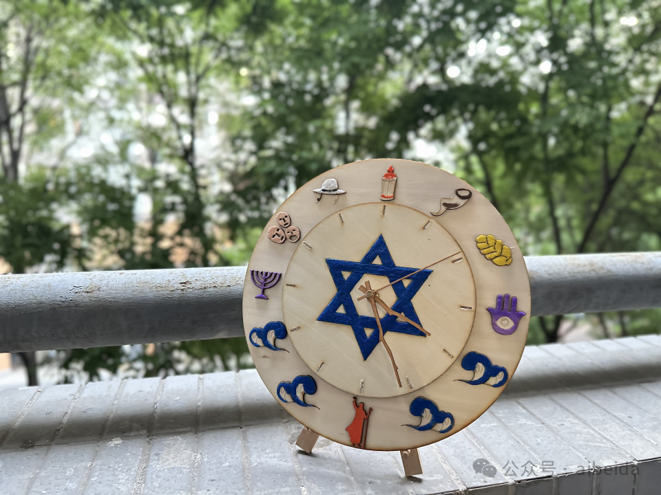
用时钟来表示犹太民族这些年来发展的历程与文化底蕴，时针与分针的转动也恰恰标志着整个民族的生生不息，坚韧持重。作为一个创意作业，我首先希望自己能够做出一个实用的小装置，其次是能够蕴含该文化的深刻力量。考虑到我有激光雕刻的技术经验，于是选择DIY犹太文化钟表。该钟表一共耗时约3天制成，中间因为等待材料邮寄、雕刻尺寸误差等有过返工，好在最后按时完成，根据老师的建议又将原木色的钟表进行了上色，用白胶黏上彩砂后的钟表更加具有民族文化风情，图案也更加明媚。
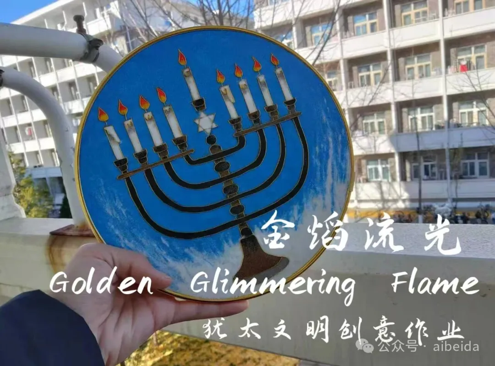
本作品采用中国非物质文化遗产——掐丝珐琅工艺，制作犹太文化中极具代表性的九烛台。其蕴含的"光明"与"希望"主题，与中华文化中追求美好、向往光明的精神高度契合。掐丝珐琅工艺独特的金属丝线轮廓和彩砂颗粒质感，不仅能精致地表现烛台的造型，其材质本身（金丝与矿物砂），也赋予了作品一种永恒感和神圣感，与主题的庄重性相得益彰。作品背景采用犹太文化的标志性蓝白色调。如同蓝天下的火焰，象征着光明不息。这件作品不仅是一件装饰品，更是一座文化交流的桥梁。无论来自何种文化背景，人类对光明、团结与奇迹的信仰是相通的。
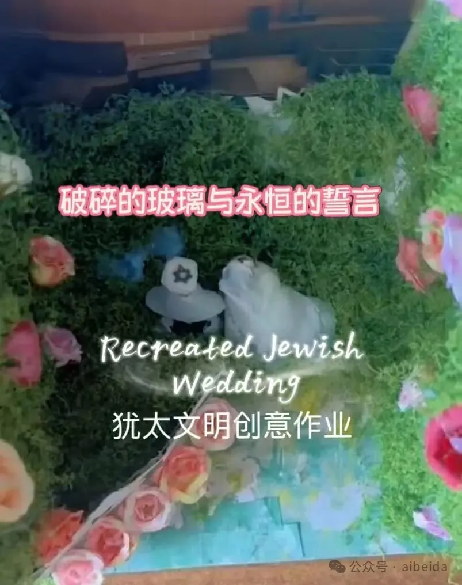
在杨梦老师开设的《全球视野下的犹太文明》课堂上，一堂关于"犹太婚礼"的讲解彻底点燃了我的创作灵感。那些我从没有听说过的仪式深深吸引了我，于是我一个大胆的想法萌生了——我要亲手复刻一个犹太婚礼现场的模型！我的创作始于场景的搭建，我将犹太讲堂的图片作为新郎新娘所面对的背景，并依据杨梦老师的ppt里展示的婚礼现场，用手工用草和手工用花装饰了天花板与四周，营造出那种幸福又正式的氛围。
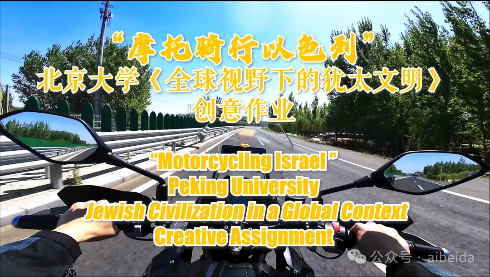
在《全球视野下的犹太文明》课堂上，我见到了许多以色列地图，尤其不同的边界。在历史进程中，这些边界不断变化，边界上也发生了许多对以色列而言极为重要的事件。然而，由于身在国内，我无法亲自前往以色列观察和体验这些边界。于是，我产生了一个想法：能不能在我身边，通过摩托骑行来感受以色列的边界？基于这样的思考，我设计了这份创意作业。
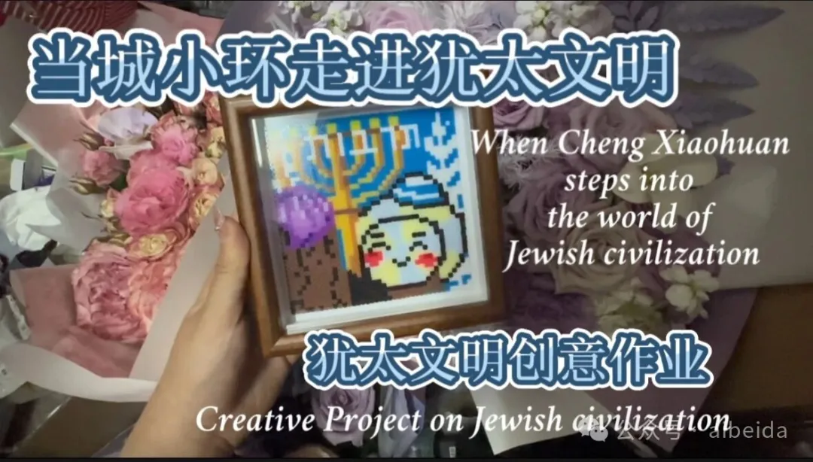
图案设计的灵感来源于杨梦老师的微信头像。杨老师通过墙上的画作与艺术大师们对话，而我们也同样追随杨老师的目光了解犹太这个遥远而陌生的民族，所以我模仿杨老师的微信头像的构图在左下角放上了杨老师的卡通背影。城小环是北京大学城市与环境学院的吉祥物，代表着学院学生的形象。站在七枝烛台下、头戴基帕的城小环恰好象征了我和其他正在学习犹太文明的城环学子。
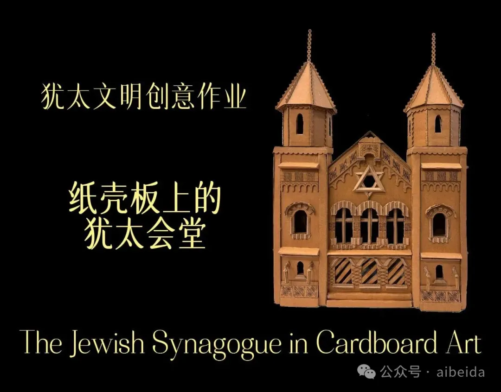
在《全球视野下的犹太文明》课程的创意作业中，我以捷克皮尔森（Plzen）的犹太大会堂为蓝本，制作了纸壳板艺术模型。这座犹太会堂是欧洲最大的犹太会堂之一，也是世界第三大犹太会堂。会堂建于 19 世纪末，是摩尔复兴式建筑的杰出代表。它既是犹太社区的宗教中心，也是犹太文化和历史的重要见证，其独特的建筑风格与深厚的历史背景深深吸引了我，成为我探索犹太文化与艺术的起点。
我一直对通过艺术和手工分享知识的方式感到好奇，这就是我产生创建【犹太风情摄影棚】的思路。在制作哈姆萨、羊角号和门柱匣等犹太文化拍照道具的过程中，我不仅锻炼了创造力，也体会到了其中的深刻意义。通过动手再现这些文化符号，我把课堂知识转化为具体的作品，更加感受到犹太传统的厚重与魅力。这一过程也让我能通过艺术表达对文化的尊重与好奇。
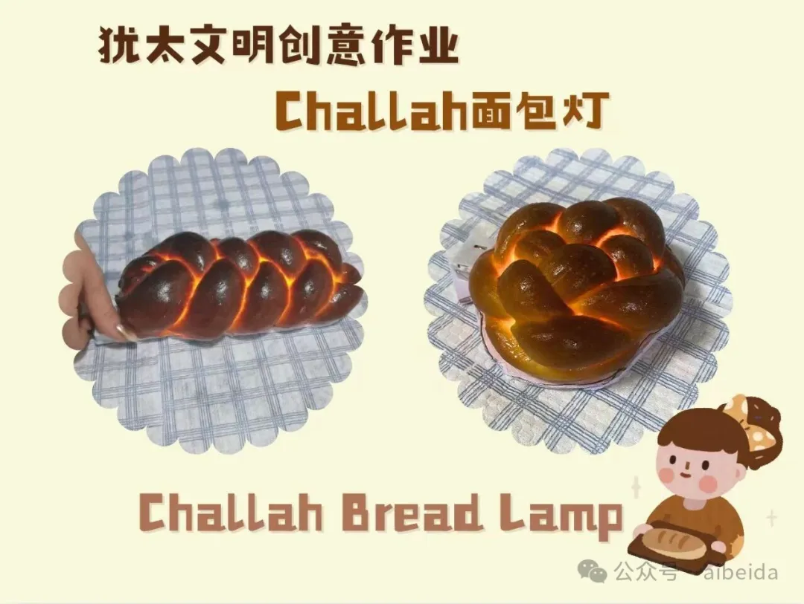
Challah是犹太安息日所必备的食物，多呈现辫子状；而至新年之时，会专门食用圆形的Challah，象征新年的开始。这样的独特性与限时性的饮食，缩影着一部分的犹太文化。选择制作Challah面包灯，首先是源于我个人对于烘焙的兴趣。从整个面包的纹路来看，Challah的重点并非是在于面包的发酵，而在于辫子形状的编织。因此，很想上手一探究竟——辫子是怎么编的如此紧实且丰满。
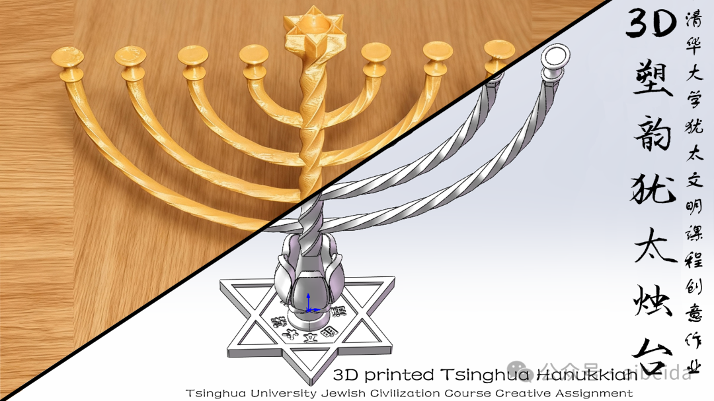
在《犹太文明》课程中，我深受犹太文化中象征主义与坚韧精神的启发，决定通过3D打印技术制作一座九臂烛台模型。九臂烛台作为犹太文化的重要符号，不仅承载着光明与希望的寓意，还体现了犹太民族在历史长河中对信仰的坚守。选择3D打印技术，是因为它能精准还原烛台繁复的纹饰与对称结构，同时赋予模型坚固耐用的特性，便于长期展示。
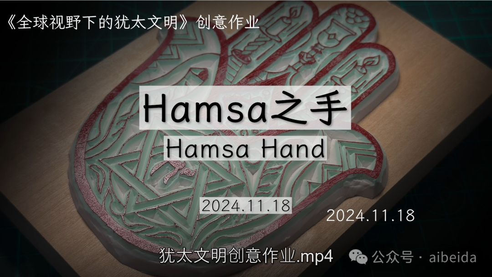
Hamsa之手在希伯来语中称为"Hamesh Hand"，是犹太文化中的护身符，如今有许多以其为灵感的饰品、挂件。Hamsa之手被认为是对抗"邪恶之眼"的工具，也有人认为这与上帝将人们带出埃及的"strong hand"有关。在作业中，我自己设计了一个Hamsa之手，并将其刻制成橡皮章。在设计时，我参考了网络上的样式，并加入了许多犹太元素。
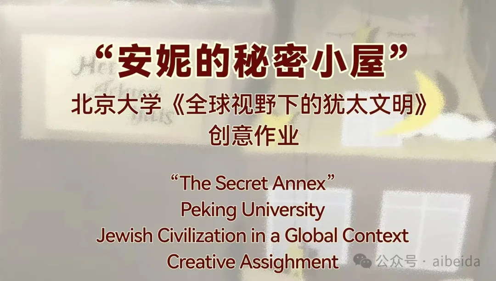
本作品是基于我对《安妮日记》的阅读理解和体验制作的创意手工。作为二战期间对纳粹屠犹的反人类罪行的第一手记录，也作为一位善良乐观的少女曾在世上活过的的痕迹，《安妮日记》被选入了教育部推荐阅读书目，我由此接触到了这本书。初读《安妮日记》时我还在上小学，对二战历史和纳粹屠犹罪行一知半解，但却切身地体会到了被迫与大自然隔绝的痛苦。
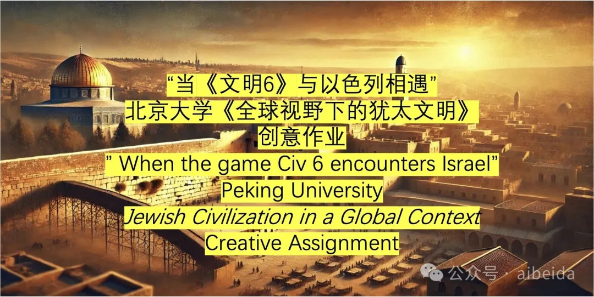
在《全球视野下的犹太文明》课程中，我以《文明6》为载体，尝试把古代以色列的精神传统与现代国家经验转化为可交互的规则体系。文明能力"出埃及记"以迁徙与坚忍为主题，映射为更强的机动与荒漠适应；特色单位"马加比勇士"以信仰激励的集结与英勇抗争为意象，体现在以信仰招募与更高近战能力上；独特建筑"犹太会堂"承接宗教---教育---社群的历史角色，被设计为持续贡献科技、文化与多类伟人点数的核心引擎。
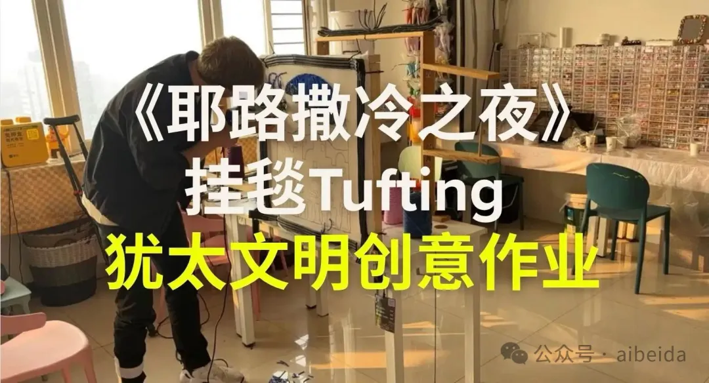
在课堂上，杨梦老师曾介绍过光明节，我也看到过往同学们的各种创意作品，其中不少优秀的 DIY 作品给了我很大启发。这让我想到，是否也可以通过艺术的方式来表达自己对犹太文化的理解。为此，我在网络上搜集了大量相关图片，并从中挑选合适的元素，最终确定了一幅完整的设计。考虑到 tufting 工艺的特点，我优先选择了色块较大、线条简洁的图案，这样更能呈现理想的效果。
在最初的犹太婚礼传统中，其实并无规定必需使用戒指；婚姻的合法性更多依靠契约、见证与象征性的“支付”来形成。但到了中世纪，戒指逐渐取代货币，成为婚礼上可被公众清楚“看见”的证物。婚戒的可见性、材质与象征意义被认为具有法律效力，因此戒指必须尺寸足够大，让见证人能明确看到赠予的动作，确保婚姻合法成立。自 13–14 世纪起，在欧洲的犹太社区内开始出现一种独特的婚戒形态—— 顶部带有微型“建筑体” 的建筑式婚戒（Architectural Wedding Ring）。这些戒指顶部往往呈现小型亭阁、穹顶、塔楼或多角建筑，部分甚至内藏可摇动的小球，在戴上戒指时发出声响，使赠予的行为不仅“视觉化”也“听觉化”，增强仪式意义。这些建筑式戒指并非仅仅是装饰，其象征对象被认为是犹太新家庭的“房屋”、 社区的会堂（Synagogue）以及最重要的象征重建已毁的耶路撒冷圣殿（Temple）。基于这一历史，我重新思考：如果以现代耶路撒冷的建筑或审美为灵感，延续中世纪的建筑式婚戒传统，会诞生怎样的作品？于是，本系列七枚戒指应运而生。
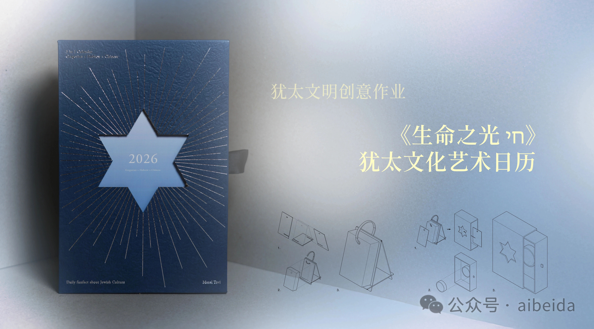
‘犹太’这个词，既熟悉又陌生，在选课系统看到这门课的时候，便以纯粹好奇的态度选课。在预料之外，这门课成为了本科生涯中最感受深刻的非专业课。在兴趣知识上，这门课从习俗、节日、食物、观念等全方面展现了犹太文化的习俗与智慧，由浅入深循序渐进，让我们带着一个欣赏并且开放的态度了解犹太复杂的历史。课堂上所了解的知识，使得我们在观看当代新闻时有一层基本的了解支撑我们的独立判断，更能客观、接近真实地了解事件，不会因不清楚而认为不重要，又或者被激进言论带偏。在这个学习犹太民族文化的过程，我不单单在知识储备上得到了增长，更在个人独立思考的能力的到了很大程度的强化，相信对于未来在国际视野、国际关系的了解和当代冲突的思辨上皆会有深远的影响。
托拉是《塔纳赫》（犹太圣经）的第一部分，与先知书、圣文集共同构成犹太信仰的完整经典体系。其不仅是一部律法书，更是犹太民族精神与身份的核心载体，其传递与诵读贯穿着整个犹太历史与集体记忆，被视为引导生活的永恒指南。托拉以精美的羊皮卷轴形式保存与使用。诵读托拉时，信徒使用专门的指经棒（Yad），以食指引导目光逐行阅读，避免手指直接触碰经文，以此表达对神圣文字至高的敬畏与保护。卷轴本身也常配以华丽的装饰物，如银质冠冕、盾牌、铃铛和胸牌，这些不仅是艺术品，更是“托拉”神圣性与荣耀的具象象征。画中人物双手托举打开着的托拉卷轴。这一姿势常见于犹太会堂的仪式中，尤其在诵读前后的高举展示时刻，象征着律法的公开传递、智慧的共享与信仰社群的团结。托拉的每一行文字、每一道笔划都被视为神圣不可更改，而举起托拉的动作，正是将永恒真理托付于当下，让古老诫命在每一代人的心中重新回响。
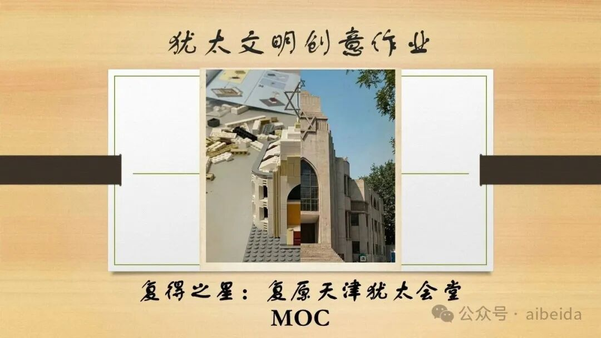
《全球视野下的犹太文明》让我对犹太文明的认知从扁平的标签走向了立体的“人”。从犹太经典到流散各地的生存哲学，我看到的不仅再是历史书上的苦难叙事，更是一种在夹缝中顽强生长的生命力。通过对全球犹太社区的学习，我看到他们如何在坚持精神内核的同时与世界对话。这门课留给我的，不仅是全球视野下的知识，更是一种打破刻板印象，去尊重和理解“他者”的历史温情。
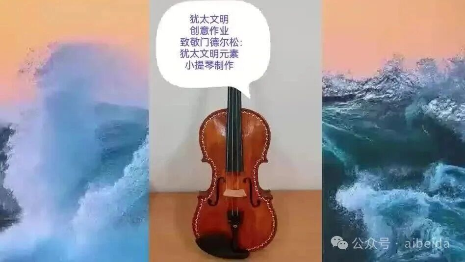
本次创意作业通过制作一把融入犹太文明元素的小提琴，致敬音乐家菲利克斯·门德尔松及其所承载的文明脉络。门德尔松的音乐在浪漫主义时期独树一帜，其清新典雅的风格，既源于他深厚的家学渊源，也与他严谨自律的个性息息相关。他的作品既保有古典形式的严谨结构，又洋溢着自然意象的灵动生气，体现出一种理性与诗意交织的平衡之美。尽管英年早逝，他的音乐却始终闪烁着希望与人文主义的光辉。
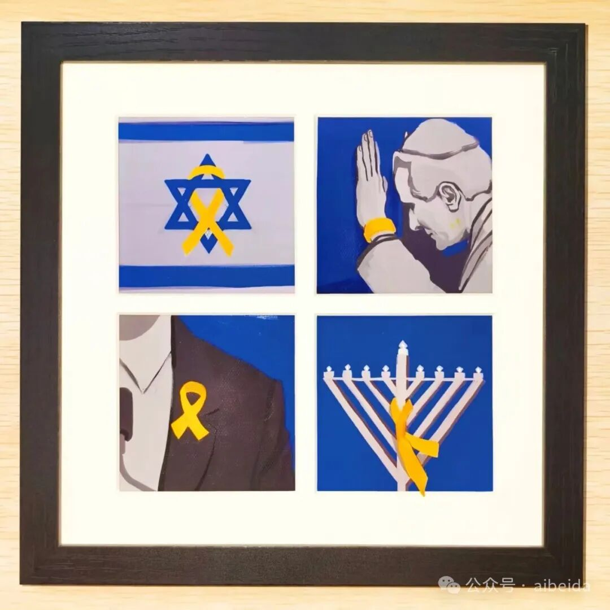
选修《全球视野下的犹太文明》这门课是因为我希望听到不同于中文互联网主流叙事的声音，从而更全面地理解冲突的现实。正如我的作品所呈现的，这门课让我看见了犹太民族在冲突中承受的伤害。除此之外，杨梦老师还邀请了多位犹太学者和海外同学，分享以色列之外的犹太群体在局势动荡中同样受到的影响。在犹太视角的世界局势分析中，我逐渐能够以更客观的方式理解历史，也对冲突双方的平民处境产生了更加深切的同情。课程中关于犹太民族的风俗、传统与历史源流的讲述，也让我接触到与本国文化迥然不同的生活方式。课程内容本身十分有趣并拓宽了我的文化视野。
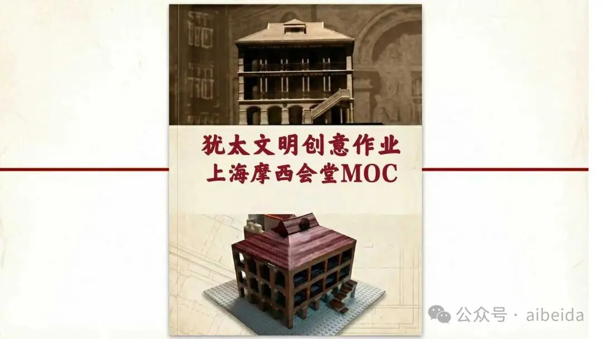
这件作品以上海犹太难民纪念馆的摩西会堂为原型，通过压缩、简化与重构的方式，将一座承载历史记忆的宗教建筑转译为体量更小、可触碰的积木模型。摩西会堂是二战时期上海庇护犹太难民的重要见证，它见证了陌生城市向无家可归者敞开大门，也记录了流亡者在艰难岁月中维系信仰、互助与尊严的努力。作品保留了会堂最具辨识度的元素——红砖立面、蓝色窗框、细长的建筑比例与倾斜屋顶，使历史空间以一种更轻、更亲近的方式重新进入当代视野。通过积木，作品尝试让观者以更直观的方式理解建筑背后的故事，使纪念不再停留于文本和展板，而成为一件可把玩、可凝视、也能引发思考的小型实体。
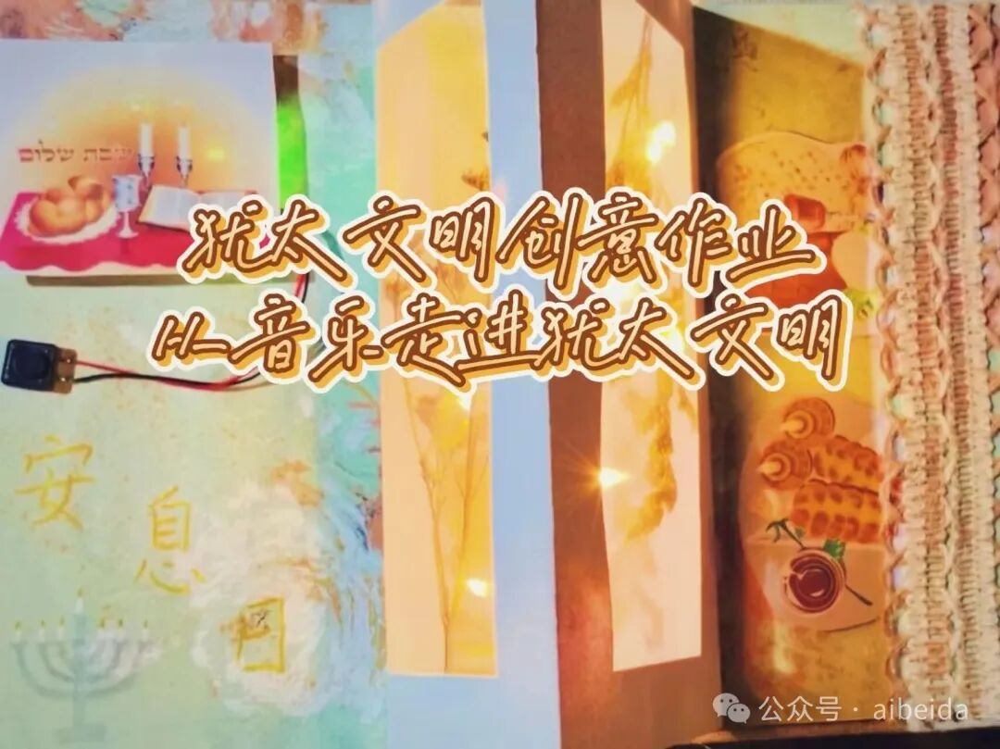
生活中我常常通过制作立体书或手工摆件、挂饰等方式来记录回忆，表达情感。结合课堂内容以及讲座感悟，我选择“从音乐走近犹太文明”的主题，尝试以时间为线，结合犹太文明的历史串联起犹太音乐发展史。本作品创造性融入了立体机关和音乐播放模块，极大加强了视听直观感受，带领观赏者感受犹太音乐与犹太文明发展的历史，品味犹太音乐表现出的“在动荡中坚守”的韧性，“在坚守中创新”的适应性，从而走入犹太民族的精神内涵。
我的作业灵感来自于苏打绿作品《他举起右手点名》的解读视频（up主@Lumos___ 做的解析BV1Yh4y1b7mn），由杨梦老师在一次课间播放。我被苏打绿的编曲和歌词吸引。作为一个非相关专业的学生，我希望能读懂歌词的含义，结合在杨梦课上的所学所感，让更多的朋友了解歌曲传达的思想。歌词中提及了毒蜘蛛、指环、六角星、萤火虫等诸多意象，我尝试将它们溯源，并给出我的理解。这首歌曲不仅揭示了二战期间犹太人在集中营里遭受的行为暴力，还影射了当今世界依然存在的思想暴力和言语暴力，我们仍需对偏见和谣言进行反思。
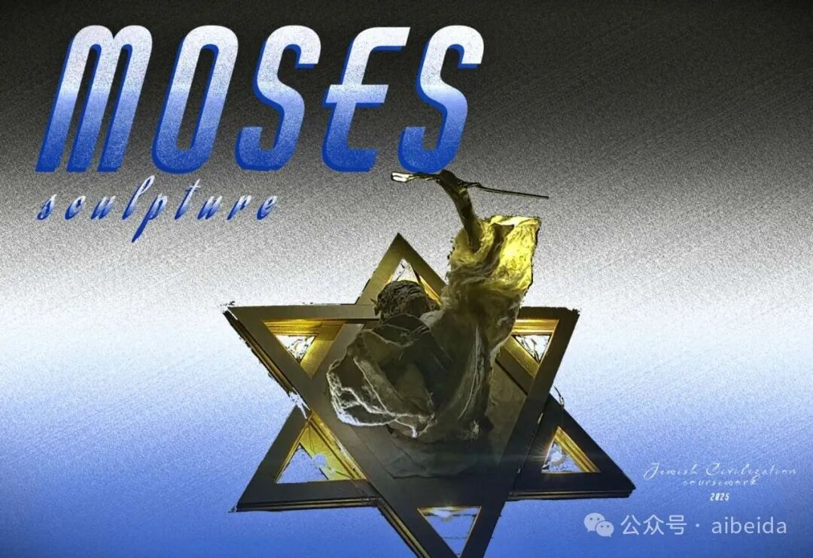
本作以摩西为主体形象，他手持权杖、怀抱石板，姿态灵感源于经典艺术中“摩西分海”的瞬间——神力汇聚、海水退开，是神与人之间沟通力量的象征。为了让“神力”更加具象化，我选择用灯光进行装饰。 灯泡在结构上的排列使整体呈现一种光从核心向外发散的效果，与大卫星的结构交织成视觉焦点，使神性的力量得以被“看见”。光的使用，一方面象征启示、律法与智慧，另一方面也与犹太文化中灯火象征希望与生命延续的意义相呼应，使作品更具文化深度。
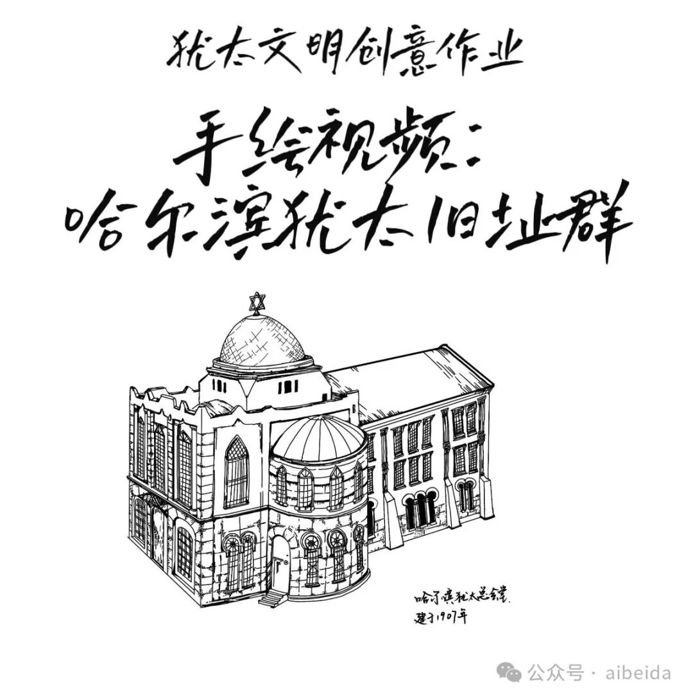
在日常生活中，我是一个古迹遗址爱好者，尤其对我国和世界各地的不可移动文物保护有浓厚的兴趣。多年以来，我亲自走访考察的全国重点文物保护单位已经接近1000处。在哈尔滨考察古迹的时候我注意到哈尔滨城市中保存着这样一组珍贵的犹太人活动旧址建筑群，这些建筑的珍贵之处在于其是中国境内保存为数不多的与犹太人活动密切相关的历史建筑，更是其中唯一被列入全国重点文物保护单位的。这些建筑所承载和反映的是一段极为特殊的历史，部分犹太人由于沙俄的迫害随着中东铁路来到中国并在东北地区安居。他们在哈尔滨投资建立了银行、邮局等各种公共设施，一定程度上促进了哈尔滨的城市建设，也为中国的近代化提供了宝贵的建设性思路。然而，这段历史在如今的中国鲜为人知，因此，把这样的历史建筑及其背后的历史用我熟悉的方式呈现出来十分有意义。
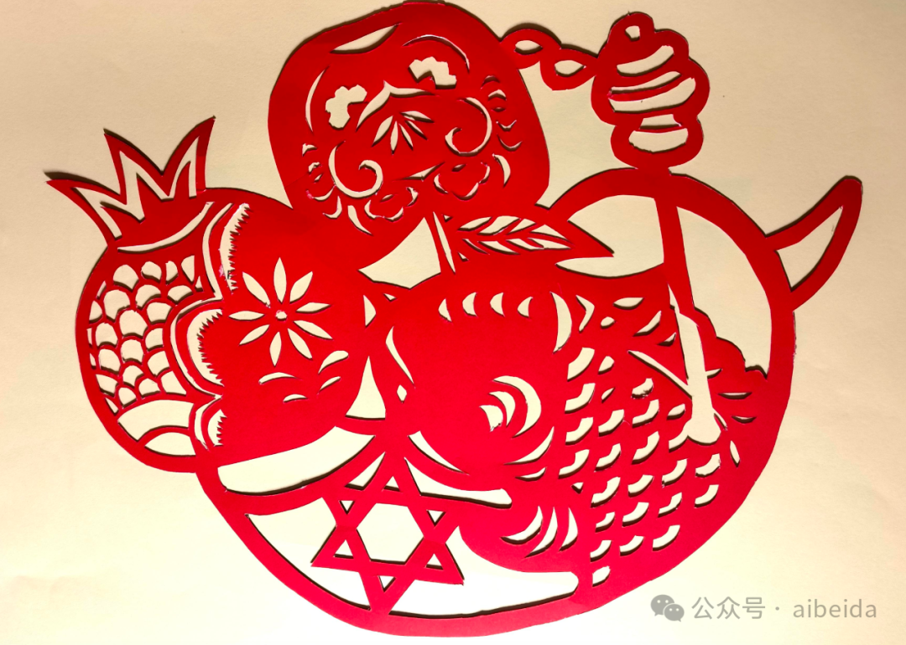
本次作业灵感来自于犹太新年中的传统食物，譬如鱼头、石榴、苹果等，在中国文化中也同样有着特殊的象征意义，且大致寓意有部分重合之处；而贴窗花作为中国农历新年的传统习俗，上述物品也经常出现传统的春节剪纸作品中。故我的作业希望能够从两种文明的交汇点延展开去，制作一有关犹太新年的剪纸作品。图案设计以羊角号为主体，串联起鱼头、蜂蜜蘸苹果、石榴等通常在犹太新年仪式上出现的几种食物，并在装饰中融入祥云、莲花等中式纹样和犹太大卫星。寓意不同文化之间的尊重与交流，以及我们对美好生活的共同追求。
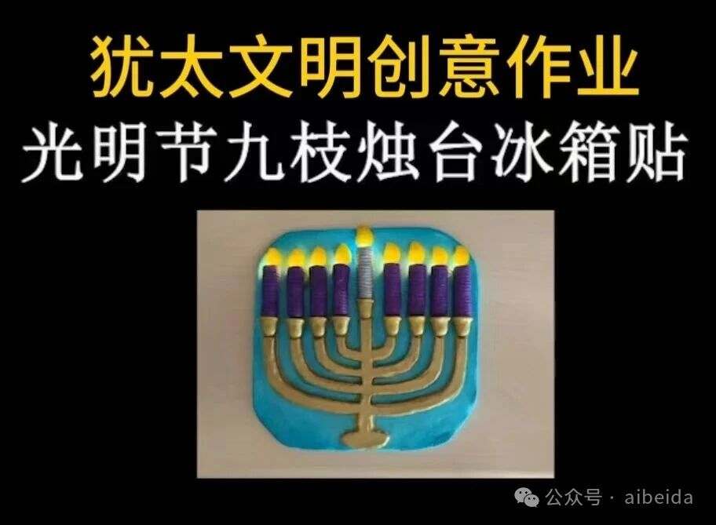
上课的时候杨梦老师展示光明节烛台的视频，讲怎么根据点燃的蜡烛数量判断是光明节的第几天。之前我正好看过磁控灯的视频，就想着可以把这个特点和冰箱贴烛台结合起来，做出一个个点亮蜡烛的效果。
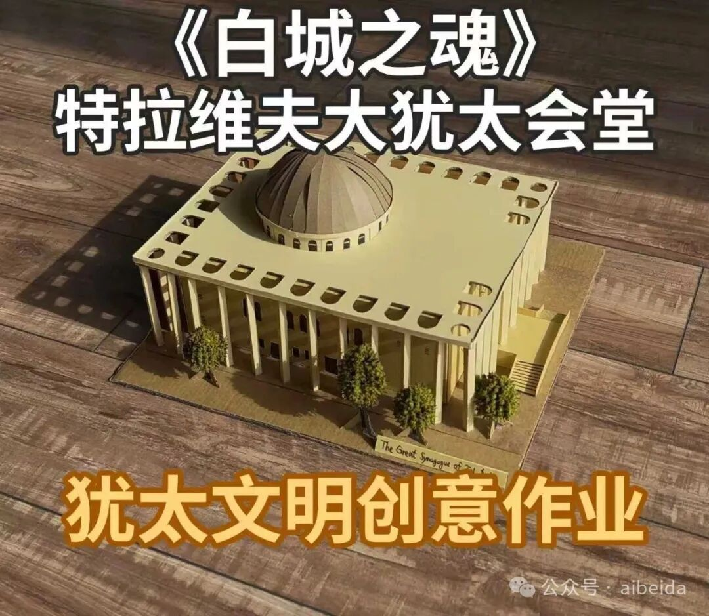
我选择复刻特拉维夫大犹太会堂，一方面它的外形比较简洁、易于制作，也可以直接将方形的屋顶拆下呈现内部。另一方面，该会堂也有一定的文化象征意义。会堂受到了特拉维夫“白城”的影响，外部经过改造后呈现出现代化的包豪斯风格，反映着以色列建国者对建立“新犹太人”的渴望，以及融入全球先进思潮的决心；而其内部陈设则属于正统派，沿袭着数千年来的律法和仪式传统，象征永恒不变的犹太教精神内核。这种现代风格与传统信仰的强烈对比，完美体现了犹太文明在当代所面临的一大议题：即如何在新的民族国家中去平衡改革新潮与古老传统。
在《强拍》的创作中，我选择将镜头从宏大的历史叙事拉回，聚焦于一位平凡的当代美国犹太裔女性——Sarah的日常生活。通过细腻描绘她从遭遇误解到奋起重生这一完整的心路历程，我想揭示的是：文明间的张力并非只存在于史书之中，它更真切地弥漫于我们身边每一次微妙的目光、无心的话语和心照不宣的沉默里。而故事的终点，并非止于控诉，而是指向重建与新生。我的主角Sarah最终选择以法律——这一现代文明的基石，作为守护尊严的武器。她将家族记忆里那个被迫的“休止符”，亲手转化为个人命运交响曲中，那个充满力量、奠定全新节奏的“强拍”
杨梦
allshallpass@gmail.com
aibeida
评论区
发表评论